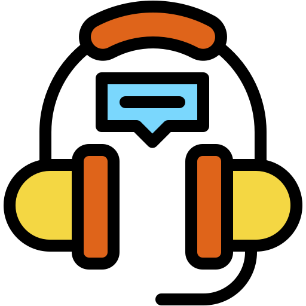
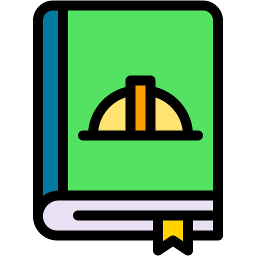

強化できるスキル
-

リスニング -
.svg) スピーキング
スピーキング
-

文法
Grammar Practice:
Common Grammar You Actually Use
Instructions
Choose the best answer for each sentence.
Question 1： 現在完了（have been）
Focus
I _____ in meetings all day, so I couldn’t reply earlier.
- A. am
- B. was
- C. have been
- D. will be
Question 2:前置詞（期限）
Focus
I’ll send the report _____ the end of the day.
- A. at
- B. in
- C. by
- D. until
Question 3：丁寧な依頼表現
Focus
_____ you have a moment to talk about the project?
- A. Do
- B. Are
- C. Would
- D. Did
Question 4：自然な相づち
Focus
A: I’m pretty busy today.
B: _____.
- A. Me too
- B. Same here
- C. So busy
- D. I busy
Question 5：動詞の使い分け
Focus
I’ll _____ you updated once I hear back.
- A. make
- B. stay
- C. keep
- D. hold
Answer & Explanation
Q1：C. have been
→ 「ずっと会議に出ていた」＝現在完了（継続）
Q2：C. by
→ 「〜までに」期限を表す前置詞
Q3：C. Would
→ ビジネスでよく使う丁寧な聞き方
Q4：B. Same here
→ 「私も同じです」の自然な表現
Q5：C. keep
→ keep 人 + 形容詞 は定番の文法
Grammar Focus
- Present perfect for ongoing actions
- Prepositions for deadlines
- Polite question forms
- Natural conversational responses
- Common verb patterns in business English